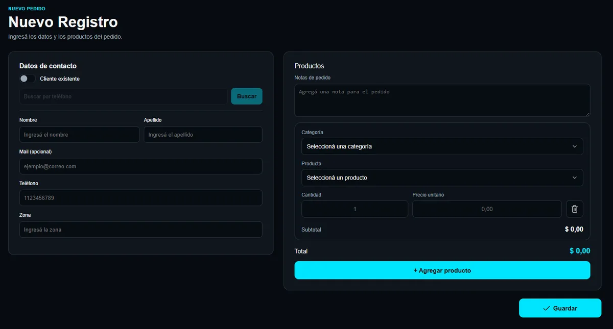
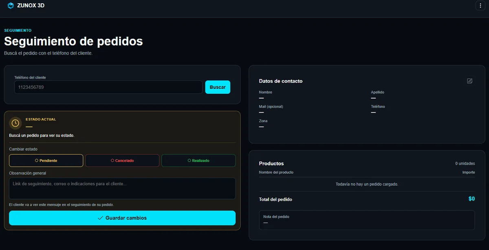
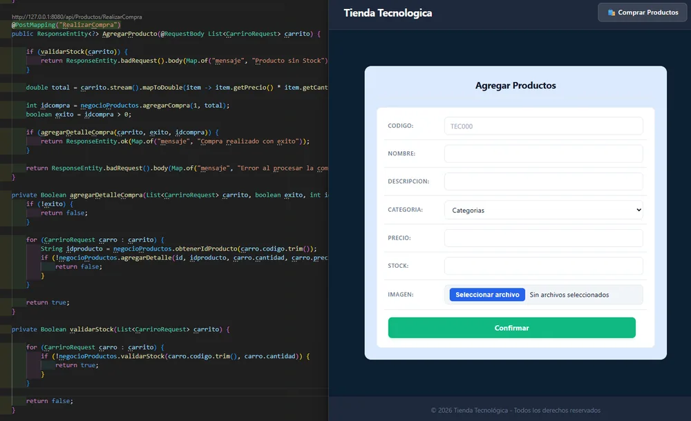
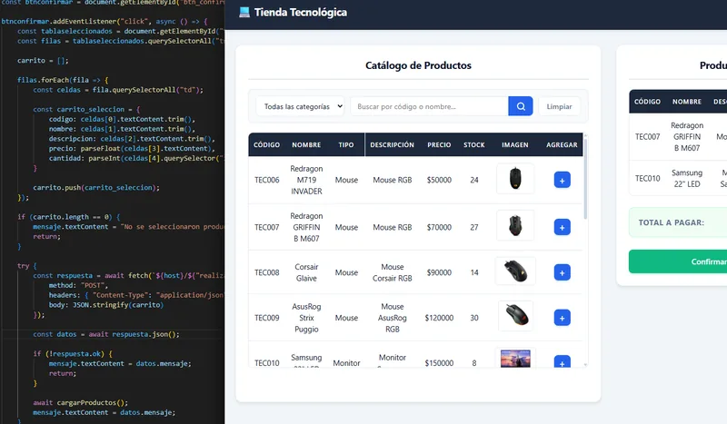
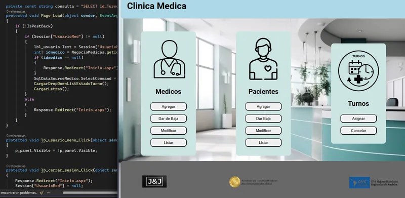
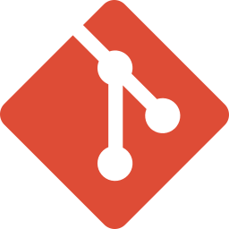
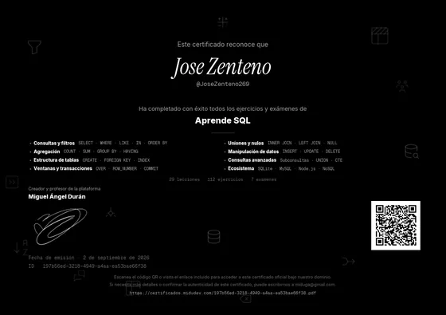
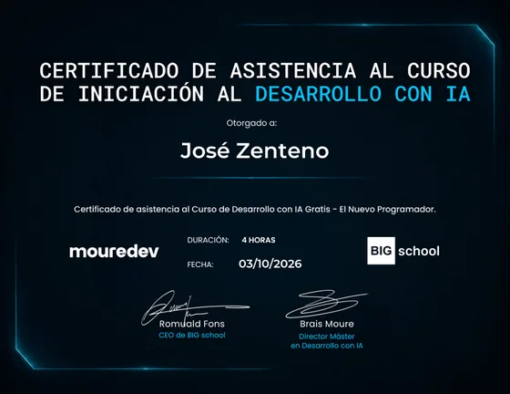
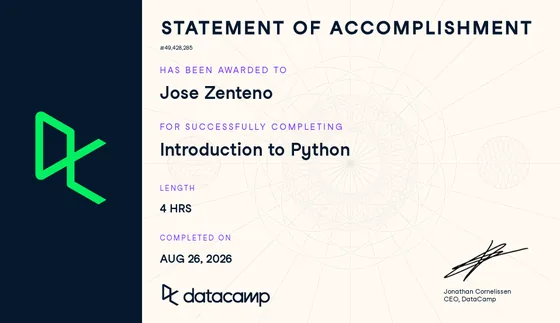

Seguimiento del pedido
Cada pedido tiene un link único con el estado, el detalle y el total.

Soy José Zenteno, de Pilar, Buenos Aires
Estudio programación en la UTN FRGP y busco mi primer trabajo como junior. Con mi equipo hicimos ZUNOX 3D, un sistema de pedidos que hoy usa un negocio real.

Carga clientes y pedidos, maneja el catálogo y cambia el estado de cada pedido.
Mira el catálogo, consulta por WhatsApp y sigue su pedido con un link propio.
API en C# con .NET 10, ADO.NET sobre PostgreSQL, sesión con JWT y mails con Resend.

Cada pedido tiene un link único con el estado, el detalle y el total.
Cuando el negocio cambia el estado, el cliente recibe un mail automático.

El negocio encuentra los pedidos de un cliente, deja una observación y edita sus datos.

Cómo trabajo
Mi lenguaje fuerte es C# con .NET, y en Java con Spring Boot sigo practicando. Uso la IA para aprender más rápido, pero no doy nada por terminado hasta entender por qué funciona.
La tienda rehecha en Java con Spring Boot y MySQL. En curso.
JavaAPI REST en capas, con transacciones y un trigger de stock.
C#Turnos médicos con roles, hecho en equipo de dos.
Web FormsConsola para una empresa de micros, con archivos binarios.
C++



Me recibí de técnico electromecánico y trabajé dos años operando maquinaria industrial. Después pasé a soporte técnico para la Universidad Austral, el Hospital Austral y el IAE.
Ahí me di cuenta de que quería entender el software por dentro. Hoy curso la Tecnicatura en Programación y me quedo con el backend: la base de datos, la API y la lógica del negocio.

Lo que está marcado como en práctica lo estoy aprendiendo y todavía no es mi fuerte.
 C#
C# Java en práctica
Java en práctica C++
C++ JavaScript
JavaScript HTML y CSS
HTML y CSS .NET y ASP.NET CoreADO.NETASP.NET Web Forms
.NET y ASP.NET CoreADO.NETASP.NET Web Forms Spring Boot en práctica
Spring Boot en práctica SQL Server
SQL Server SQLite en práctica
SQLite en práctica
Git y GitHub Visual Studio
Visual Studio Postman
PostmanConsultas, JOIN, CTE, funciones de ventana y transacciones.
midudevRamas, conflictos y trabajo en equipo con repositorios.
TodoCodePlanificar antes de pedir código y revisar lo que hacen los agentes.
BIG schoolFundamentos del lenguaje y Python para desarrolladores.
DataCamp

